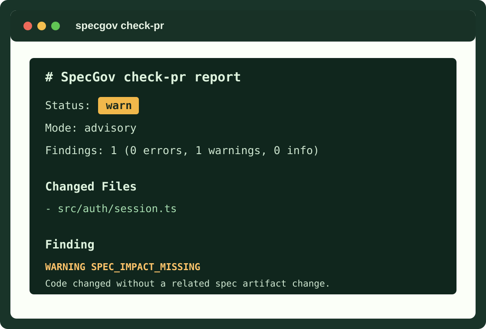

Declare artifacts
Mark docs, ADRs, requirements, and spec folders as governed artifacts.
Deterministic spec governance for Git
SpecGov keeps requirements, ADRs, product docs, and spec folders aligned with pull requests without API keys, hosted services, or model calls.

The drift problem
Modern teams write requirements, ADRs, implementation plans, and AI-facing specs, then review code in a separate workflow. SpecGov connects those layers so reviewers can see when a pull request changes implementation without updating the artifacts that explain the intended behavior.
It is intentionally small: a YAML manifest, deterministic file discovery, code-to-spec mappings, lifecycle metadata, Markdown reports, JSON trace output, and a GitHub Action wrapper.
Mechanics
Mark docs, ADRs, requirements, and spec folders as governed artifacts.
Connect implementation directories to the artifacts that must move with them.
Report missing spec impact, unmapped code, lifecycle gaps, and drift.
Quick start
SpecGov is pre-release. Until the first npm package and version tag are published, use the source build.
git clone https://github.com/paladini/specgov.git
cd specgov
npm ci
npm run build
npm linkspecgov init
specgov scan
specgov check-pr --changed-file src/auth/session.ts
specgov trace --out .specgov.trace.json
specgov driftManifest
Start with one high-value mapping. Expand gradually after the first advisory findings make sense to reviewers.
version: 1
mode: advisory
artifacts:
- path: "docs/**/*.md"
kind: documentation
owner: docs
- path: "adr/**/*.md"
kind: decision
owner: architecture
mappings:
- code: "src/auth/**"
specs:
- "docs/auth/**"
- "adr/auth/**"
rules:
require_spec_impact_for_code_changes: true
stale_after_days: 180Commands
specgov init
Create a starter manifest.
specgov scan
Discover governed artifacts and lifecycle findings.
specgov check-pr
Compare changed files against code-to-spec mappings.
specgov trace
Write machine-readable trace JSON.
specgov drift
Report stale, empty, orphaned, or superseded artifacts.
GitHub Action
Advisory mode gives teams visibility without blocking adoption. Strict mode turns warnings into a failing check.
name: SpecGov
on:
pull_request:
jobs:
specgov:
runs-on: ubuntu-latest
steps:
- uses: actions/checkout@v5
with:
fetch-depth: 0
- uses: paladini/specgov@main
with:
mode: advisory
base-ref: ${{ github.event.pull_request.base.sha }}
head-ref: ${{ github.event.pull_request.head.sha }}Adoption paths
Map `src/**` to `docs/**` for product or engineering docs.
View exampleRequire code areas to move with matching ADR and product docs.
View exampleGovern `.specs`, `.kiro/specs`, or custom framework folders.
View exampleSearchable answers
SpecGov checks whether changed code paths map to requirements, ADRs, product docs, or spec folders. It reports missing spec impact, stale artifacts, lifecycle gaps, and unmapped code.
No. SpecGov runs locally and in CI with deterministic checks, so it does not require API keys, hosted services, or model calls.
Yes. SpecGov maps existing docs, ADRs, .specs folders, Kiro specs, Spec Kit files, or custom paths through a small .specgov.yml manifest.